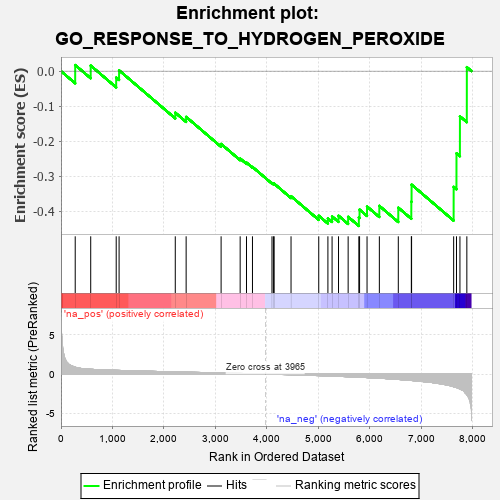
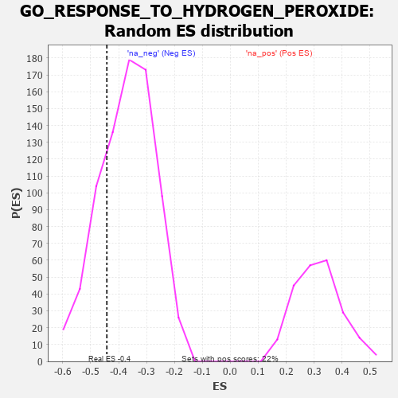

| | | Dataset | 7d |
| Phenotype | NoPhenotypeAvailable |
| Upregulated in class | na_neg |
| GeneSet | GO_RESPONSE_TO_HYDROGEN_PEROXIDE |
| Enrichment Score (ES) | -0.44218206 |
| Normalized Enrichment Score (NES) | -1.1971713 |
| Nominal p-value | 0.23264782 |
| FDR q-value | 0.6407972 |
| FWER p-Value | 1.0 |
Table: GSEA Results Summary

Fig 1: Enrichment plot: GO_RESPONSE_TO_HYDROGEN_PEROXIDE
Profile of the Running ES Score & Positions of GeneSet Members on the Rank Ordered List
| PROBE | GENE SYMBOL | GENE_TITLE | RANK IN GENE LIST | RANK METRIC SCORE | RUNNING ES | CORE ENRICHMENT | | 1 | HGF | | | 276 | 0.870 | 0.0174 | No |
| 2 | APEX1 | | | 577 | 0.604 | 0.0158 | No |
| 3 | AIFM1 | | | 1072 | 0.469 | -0.0183 | No |
| 4 | SRC | | | 1128 | 0.459 | 0.0023 | No |
| 5 | TRAP1 | | | 2219 | 0.274 | -0.1186 | No |
| 6 | MET | | | 2430 | 0.240 | -0.1307 | No |
| 7 | GPX1 | | | 3109 | 0.135 | -0.2079 | No |
| 8 | LDHA | | | 3479 | 0.080 | -0.2496 | No |
| 9 | STK25 | | | 3602 | 0.059 | -0.2613 | No |
| 10 | HSF1 | | | 3718 | 0.039 | -0.2735 | No |
| 11 | PDE8A | | | 4097 | -0.023 | -0.3197 | No |
| 12 | ABL1 | | | 4125 | -0.027 | -0.3215 | No |
| 13 | CRK | | | 4139 | -0.031 | -0.3213 | No |
| 14 | LRRK2 | | | 4467 | -0.087 | -0.3572 | No |
| 15 | KLF4 | | | 5005 | -0.198 | -0.4130 | No |
| 16 | HDAC6 | | | 5183 | -0.244 | -0.4206 | Yes |
| 17 | CDK1 | | | 5264 | -0.262 | -0.4150 | Yes |
| 18 | PRDX3 | | | 5389 | -0.293 | -0.4130 | Yes |
| 19 | SPHK1 | | | 5576 | -0.339 | -0.4161 | Yes |
| 20 | TRPC6 | | | 5784 | -0.401 | -0.4181 | Yes |
| 21 | ADA | | | 5798 | -0.405 | -0.3955 | Yes |
| 22 | PCGF2 | | | 5943 | -0.451 | -0.3866 | Yes |
| 23 | KLF2 | | | 6182 | -0.532 | -0.3847 | Yes |
| 24 | STK24 | | | 6550 | -0.684 | -0.3899 | Yes |
| 25 | NET1 | | | 6803 | -0.816 | -0.3728 | Yes |
| 26 | ADAM9 | | | 6808 | -0.819 | -0.3242 | Yes |
| 27 | TRPA1 | | | 7625 | -1.608 | -0.3306 | Yes |
| 28 | TRPM2 | | | 7680 | -1.712 | -0.2348 | Yes |
| 29 | CASP3 | | | 7747 | -1.902 | -0.1291 | Yes |
| 30 | FYN | | | 7881 | -2.622 | 0.0113 | Yes |
Table: GSEA details [plain text format]

Fig 2: GO_RESPONSE_TO_HYDROGEN_PEROXIDE: Random ES distribution
Gene set null distribution of ES for GO_RESPONSE_TO_HYDROGEN_PEROXIDE